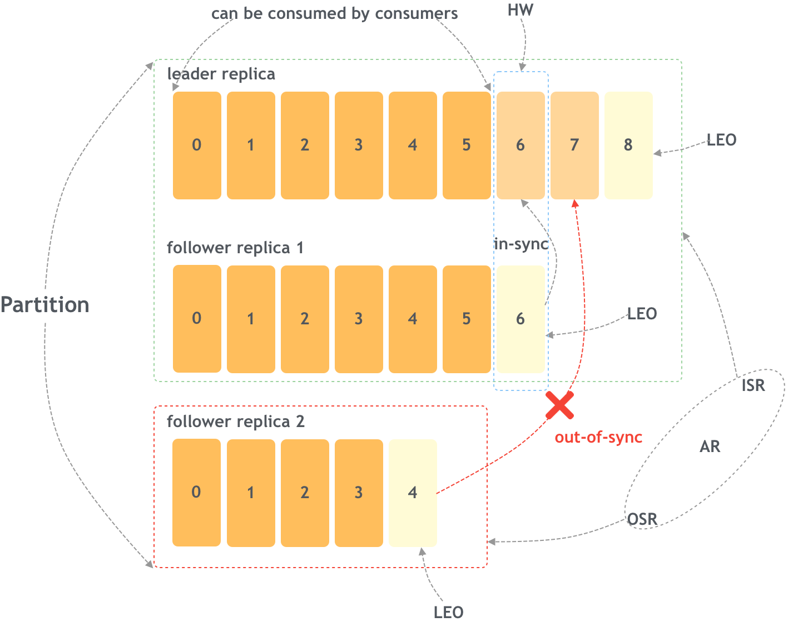

Ch05-Kafka 之 Partition
July 2, 2018
Kafka Partition 相关的机制是比较复杂的，它自身保留了一个 leader 来对外提供消息操作的能力，若干 follower 通过 leader 同步消息保证数据可靠性。
1. 基础概念 #

| Term | Name | 说明 |
|---|---|---|
| AR | Assigned Replicas | 所有的副本统称为 AR，AR=ISR+OSR |
| ISR | In-Sync Replicas | ISR 是 AR 的一个子集，即所有和主副本保持同步的副本集合 |
| OSR | Out-of-Sync Replicas | OSR 也是 AR 的一个子集，所有和主副本未保持一致的副本集合。Kafka 通过一些算法来判定从副本是否保持同步，处于失效的副本也可以通过追上主副本来重新进入 ISR。 |
| LEO | Log End Offset | LEO 是下一个消息将要写入的 offset 偏移，在 LEO 之前的消息都已经写入日志了，每一个副本都有一个自己的 LEO。 |
| HW | High Watermark | 所有和主副本保持同步的副本中，最小的那个 LEO 就是 HW，这个 offset 意味着在这之前的消息都已经被所有的 ISR 写入日志了，消费者可以拉取了，这时即使主副本失效其中一个 ISR 副本成为主副本消息也不会丢失。 |
2. 主副本 HW 与 LEO #
LEO 和 HW 都是消息的偏移量，其中 HW 是所有 ISR 中最小的那个 LEO。
- 生产者将消息发送给 leader；
- leader 追加消息到日志中，并更新自己的偏移量信息，同时 leader 也维护着 follower 的信息（比如 LEO 等）；
- follower 向 leader 请求同步，同时携带自己的 LEO 等信息；
- leader 读取日志，拉取保存的每个 follower 的信息（LEO）；
- leader 将数据返回给 follower，同时还有自己的 HW；
- follower 拿到数据之后追加到自己的日志中，同时根据返回的 HW 更新自己的 HW，方法就是取自己的 LEO 和 HW 的最小值。
从上面这个过程可以看出，一次同步过程之后 leader 的 HW 并没有增长，只有再经历一次同步，follower 携带上一次更新的 LEO 给 leader 之后，leader 才能更新 HW，这个时候才能确认消息确实是被所有的 ISR 副本写入成功了。所以 leader 的 HW 很重要，因为这个值直接决定了消费者可以消费的数据。
3. 故障恢复 #
3.1 Follower 故障 #
follower 发生故障后会被临时踢出 ISR 集合，待该 follower 恢复后，follower 会读取本地磁盘记录的上次的 HW，并将 log 文件高于 HW 的部分截取掉，从 HW 开始向 leader 进行同步数据操作。等该 follower 的 LEO 大于等于该 partition 的 HW，即 follower 追上 leader 后，就可以重新加入 ISR 了。
3.2 Leader 故障 #
leader 发生故障后，会从 ISR 中选出一个新的 leader，之后，为保证多个副本之间的数据一致性，其余的 follower 会先将各自的 log 文件高于 HW 的部分截掉，然后从新的 leader 同步数据。注意：这只能保证副本之间的数据一致性，并不能保证数据不丢失或者不重复。